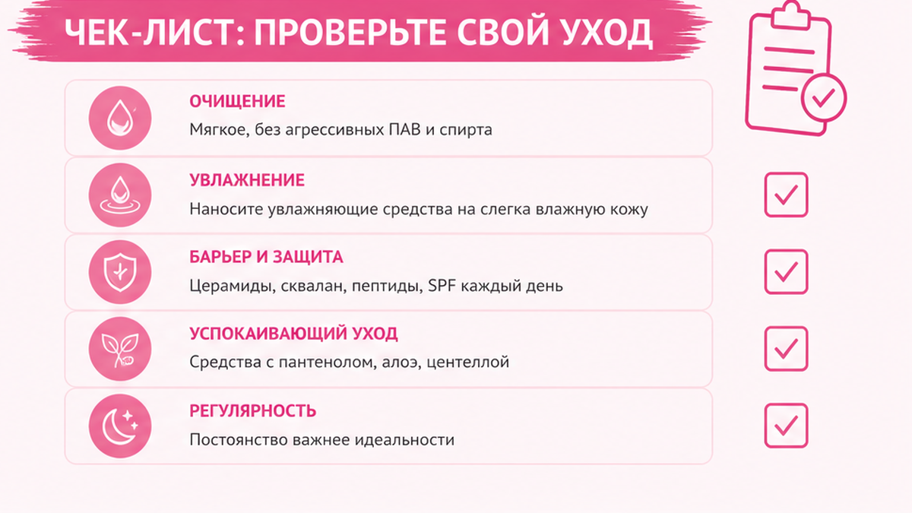
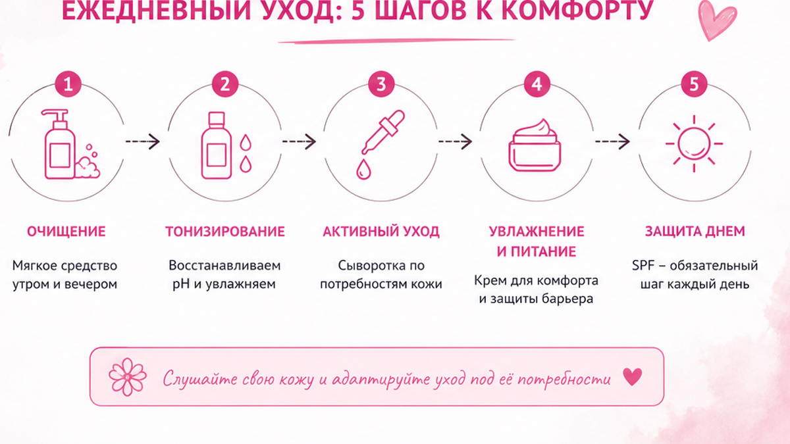
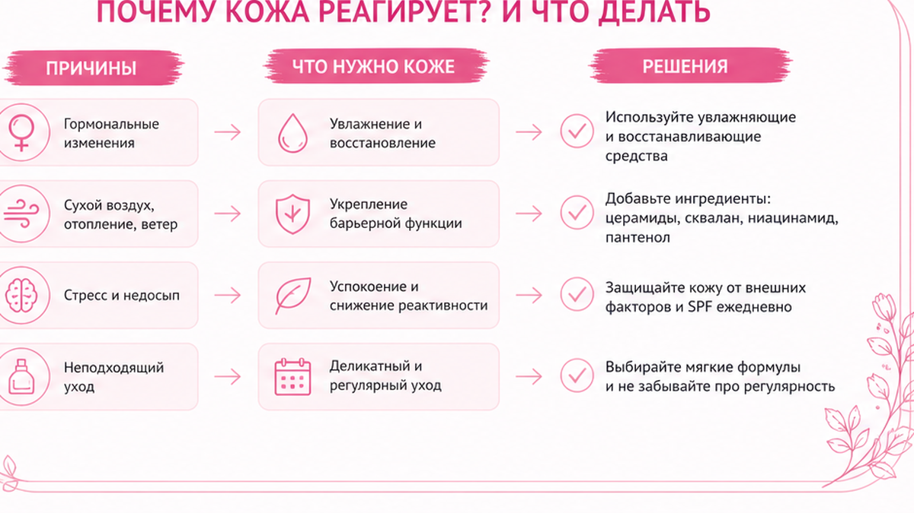

Как определить дошу по коже — проще, чем кажется: смотрите не на «тип кожи» из баночки, а на три набора признаков — сухость и напряжение (Вата), тепло и воспаление (Пита), отёк и плотность (Капха). Ниже — быстрый тест, таблица ухода и фейс-практик и план на неделю без эзотерики.
Один и тот же крем или одна и та же фейс-йога могут «спасать» одну женщину и раздражать другую. Часто дело не в бренде, а в том, что коже сейчас нужна другая доша — не та, что была пять лет назад.
Разберём Вату, Питу и Капху простыми словами, как понять свою дошу по коже прямо сейчас, что делать с уходом и движением лица — и где типичные ошибки.
На консультациях часто слышу: «Елена, я купила то, что помогло подруге. У неё сияет, у меня — краснота и прыщи».
Или наоборот: «Делала фейс-йогу по видео — лицо стало суше и злее».
Аюрведа здесь не про гороскоп.
Это про язык качеств: сухо, горячо, тяжело.
Кожа — самый честный индикатор, потому что вы видите её каждый день.
Я не предлагаю менять всю жизнь по таблице из интернета.
Достаточно понять, какая доша «кричит» сейчас — и 14 дней держать один уход и одну фейс-практику.

Вата — ветер и движение. На лице: тонкая кожа, мелкая «сеточка», сухость, быстрая реакция на холод и стресс. Часто одна щека или угол глаза «устают» раньше. Мышцы под кожей кажутся «на взводе» — лоб, челюсть, межбровье.
Пита — тепло и трансформация. На лице: тёплая на ощупь кожа, жирный блеск в Т-зоне, склонность к покраснению, угрям, сосудикам. После солнца или острого обеда лицо «горит». Мышцы откликаются быстро — тонус есть, но воспаление тоже.
Капха — влага и стабильность. На лице: плотная, «наполненная» кожа, реже мелкие морщинки, чаще отёк, тяжесть овала, расширенные поры, комедоны. Утром лицо может быть гладким, к вечеру — «плывёт».
У большинства женщин 40+ не «чистая» одна доша, а смесь.
Но для ухода важна та, которая перегружена сейчас — это викрити, текущий дисбаланс.
Если вы уже выстроили привычки для омоложения, доша поможет не ломать лицо не тем кремом и не тем движением.
💡 Запомните три слова: Вата — сухо и нервно, Пита — горячо и краснеет, Капха — отекает и тяжелеет.

Тест не заменяет врача при выраженных заболеваниях кожи. Это ориентир для ухода и мягких практик дома.
Шаг 1. Утром, до умывания, посмотрите лицо при дневном свете. Отметьте: сухость / блеск / отёк.
Шаг 2. Положите ладонь на щёку на 10 секунд. Тепло и покраснение после — больше Пита. Холодная сухая щека — Вата. Плотная, «мокрая» — Капха.
Шаг 3. Вспомните неделю: что чаще — зуд и стянутость (Вата), воспаления и жжение (Пита), одутловатость к вечеру (Капха)?
Шаг 4. Посмотрите на стресс: не можете расслабить челюсть днём — усиливает Вату. Вспыльчивость + красные пятна — Пита. Тяжесть и «не хочу двигаться» — Капха.
Шаг 5. Выберите 2 признака из одной колонки — это ваша ведущая доша сейчас.
Если признаки смешались — выберите то, что мешает больше: зуд, прыщи или отёк.
Не ищите «идеальную чистоту» типа.
В 45+ почти всегда есть вторичная доша — её учитывают позже, не в первую неделю.
| Признак | Вата | Пита | Капха |
|---|---|---|---|
| Текстура | Тонкая, сухая | Тёплая, жирная | Плотная, влажная |
| К вечеру | «Усталое», серое | Красное, горячее | Отёк, овал «течёт» |
| Реакция на крем | Жадно впитывает масло | Легко воспаляется от жирного | Забивает поры от масел |
| Мышцы лица | Зажаты, микроспазмы | Активные, «ответные» | Мало тонуса, тяжесть |
Не уверены в типе кожи по косметике — пройдите диагностику кожи, чтобы не покупать лишнее.
Запишите результат теста на листе: «сейчас ведущая — …».
Через 14 дней пересмотрите: доша может сместиться — это нормально.

Ниже — не «на всю жизнь», а на 2–4 недели, пока кожа отвечает спокойнее.
Вата (сухость, напряжение)
Пита (тепло, воспаление)
Капха (отёк, тяжесть)
Сделайте: выберите одну колонку и держите её 14 дней. Не делайте: смешивать масло для Ваты и лимфу для Капхи в один вечер «на всякий случай».
Для Ваты вечером полезно 2–3 минуты поглаживания лба и щёк — без давления.
Для Питы — прохладное умывание и отказ от горячего душа в лицо.
Для Капхи — 5 минут лимфы и короткая прогулка до ужина.
Эти микро-действия часто дают больше, чем новая баночка «для всех типов».
❌ Что ломает результат:
✅ Что работает:
Когда клиентка говорит «я всё перепробовала», почти всегда она перепробовала чужой тип.
На практике Вата часто приходит осенью и зимой: отопление, ветер, мало сна — кожа «скрипит».
Пита вспыхивает после отпуска на солнце, острого ужина или стресса на работе.
Капха тяжелеет после праздников и длинных выходных с диваном и сладким.
Это не диагноз — это сезонный сигнал.
Вата нуждается в покое и питании.
Пита — в прохладе и спокойствии.
Капха — в лёгкости и движении лимфы.
Это не мораль — это механика.
Если сомневаетесь между Питой и Капхой — посмотрите на подбородок и щёки к вечеру.
Жар и прыщи — больше Пита.
Овал «поплыл» без красноты — больше Капха.
Доша — не ярлык. Это подсказка, с какой стороны подойти к лицу сегодня, а не навсегда.
Один тип. Один фокус. Без революции.
Если через неделю кожа спокойнее — продлите ещё на 7 дней.
Если хуже — остановитесь и упростите до очищения + SPF + вода.
Миниплан на вторую неделю.
Утро: SPF + 30 секунд проверки щёк (сухо / горячо / отёк).
Вечер: уход по типу + 5 минут практики без новых продуктов.
Раз в 3 дня: фото в одном свете.
Не менять: всю косметичку за одну покупку.
На второй неделе можно добавить одну фейс-практику из таблицы — не все три типа сразу.
Если кожа реактивная — начните с ухода, движение подключите на 4-й день.
Да. Часто Вата + Пита (сухость и покраснения) или Пита + Капха (жирность и отёк). Выберите то, что беспокоит сильнее сейчас, и работайте с одним ведущим качеством.
Лицо — хороший старт, но добавьте сон, пищеварение и стресс. Если кожа сухая, а вы спите 8 часов и едите стабильно — возможно, это сезонная Вата, а не «ваш тип навсегда».
Можно для интереса. Для ухода надёжнее смотреть на кожу и самочувствие 7–14 дней. Тело меняется быстрее, чем опросник в памяти.
Косметологический тип — про себум. Доша — про качества: сухость, жар, тяжесть, реакцию мышц и стресс. Поэтому жирная кожа может быть Капхой или Питой — уход разный.
Вате — расслабление и лимфа. Пите — умеренный тонус без перегрева. Капхе — лимфодренаж и сухой массаж. Подробнее — в статье про выбор между фейсбилдингом и фейс-йогой.
Да. Зимой Вата часто усиливается — больше питания. Летом Пита — больше прохлады и SPF. Слушайте кожу, не календарь из Pinterest.
Не обязательно для старта. База: очищение, SPF, движение по типу, сон. Экзотика — после стабилизации, с врачом при хронических болезнях.
Ощущение комфорта — 5–10 дней. На фото в одном свете — 3–4 недели. Быстрее обещают только уколы и фильтры.
Вернитесь к минимуму: мягкое умывание, SPF, 5 минут спокойной лимфы. И проверьте, не смешали ли вы противоположные типы в одной неделе.
С одного вопроса: «Что беспокоит кожу сейчас — сухость, жар или отёк?» Ответ сразу сужает уход до одной колонки таблицы. Остальное — через неделю, если захотите углубиться.
Достоверность: материал основан на практике Елены Шимановской и общеизвестных принципах аюрведической типологии. Не медицинская рекомендация. При акне, розацеа, дерматите — дерматолог.
🔥 Мой Telegram-канал «Silver Cream»
❓ Какая доша у вас по тесту — Вата, Пита или Капха? Или смесь? Напишите в комментариях ⤵️